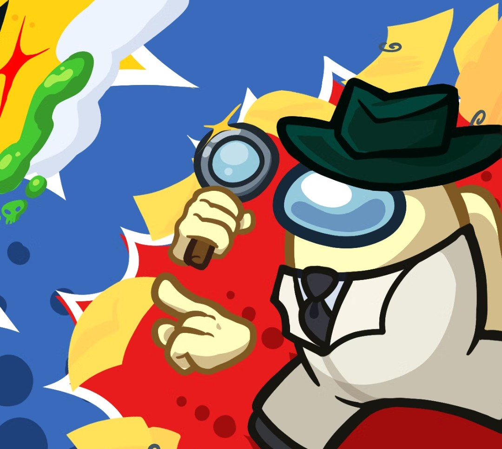
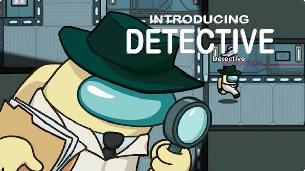

1. Historia, Contexto y Rol Operativo en la Misión
El Detective representa la rama de la criminalística forense en los protocolos espaciales. Frente a la recurrencia de homicidios en cámaras aisladas donde los únicos indicios eran restos calcinados o cuerpos mutilados sin testigos directos, las autoridades institucionales integraron a un perito entrenado en el análisis de trazas físicas, espectroscopia luminiscente y reconstrucción balística de escenas del crimen.
Provisto de un visor espectral ajustado para captar la fluorescencia del calzado presurizado sobre las planchas metálicas de la nave, el Detective es capaz de percibir huellas de pisadas de colores que los ojos humanos ordinarios no pueden distinguir. Esta visión ultravioleta permite seguir la trayectoria exacta que tomó un asesino tras clavar su cuchilla o emerger de una rejilla de ventilación, desarmando en segundos las excusas de quien afirme haber estado en un sector completamente distinto.
Asimismo, el Detective cuenta con la facultad legal de interrogar a tripulantes sospechosos y documentar marcas horarias exactas sobre su cuaderno de bitácora. Su labor es científica: no formula hipótesis basándose en corazonadas o prejuicios cromáticos, sino en evidencias empíricas tangibles que presenta como prueba de cargo en las asambleas.
2. Análisis de Mecánicas, Visor y Métodos Forenses
El conjunto de herramientas del Detective transforma la experiencia de juego en una cacería metódica de pistas físicas:
2.1. Rastreo de Huellas [Visor Espectral]
Observa pisadas coloreadas sobre el piso que coinciden con el color del traje del jugador que transitó por el lugar, desvaneciéndose tras unos segundos. Esta capacidad ejerce un impacto directo sobre la dinámica de supervivencia en la nave (Persistencia: 4 a 8 Segundos), obligando tanto a aliados como a adversarios a recalcular constantemente sus rutas de tránsito y tiempos de reacción.
2.2. Registro de la Escena [Peritaje]
Inspecciona el cuerpo caído para obtener un reporte sobre el tiempo transcurrido desde la agresión, cotejando la hora exacta del ataque. Esta capacidad ejerce un impacto directo sobre la dinámica de supervivencia en la nave (Precisión: Ventana de 5s), obligando tanto a aliados como a adversarios a recalcular constantemente sus rutas de tránsito y tiempos de reacción.
2.3. Interrogatorio Directo [Fase de Asamblea]
Dispone de facultades en asamblea para cuestionar coartadas y solicitar confirmación de rutas a fin de exponer contradicciones insalvables. Esta capacidad ejerce un impacto directo sobre la dinámica de supervivencia en la nave (Usos: 1 por Reunión), obligando tanto a aliados como a adversarios a recalcular constantemente sus rutas de tránsito y tiempos de reacción.
3. Ventajas Estratégicas y Puntos Vulnerables
3.1. Ventajas Operativas y Fortalezas Estratégicas
El despliegue eficiente de este rol aporta ventajas sustanciales que permiten maximizar el control del mapa y acelerar los objetivos del equipo:
- Ventaja táctica: Descubre impostores que acaban de ventilar al observar sus huellas saliendo del ducto.
- Ventaja táctica: Verifica si quien reporta un cadáver cometió en realidad un self-report.
- Ventaja táctica: Provee pruebas físicas contundentes que neutralizan el palabrerío falso.
- Ventaja táctica: Extraordinaria sinergia con el Científico y el Localizador.
3.2. Vulnerabilidades Críticas y Limitaciones Operativas
No obstante, el operador se encuentra sujeto a vulnerabilidades severas que los adversarios procurarán capitalizar en los momentos de mayor tensión:
- Punto vulnerable: En salas de alto tránsito (como Cafetería), las huellas se superponen volviéndose confusas.
- Punto vulnerable: Las huellas de un Cambiaformas pueden reflejar el color del tripulante suplantado.
- Punto vulnerable: Mirar fijamente las pisadas en el suelo reduce la visión de agresores que se aproximan.
- Punto vulnerable: Blanco altamente codiciado para asesinatos en pasillos ciegos.
4. Estrategia Avanzada y Sociometría del Debate
4.1. El Secreto del Pasillo Muerto
Si patrullas cerca de reactores o especímenes y notas un rastro solitario de huellas rojas que sale de una pared sin que nadie haya caminado por la puerta, no hay duda posible: un impostor acaba de emerger de la ventilación.
4.2. La Trampa del Testimonio Previo
Durante el debate, no reveles tus pruebas de inmediato. Permite que el sospechoso elabore primero toda su historia («Estuve reparando cables en O2 todo el turno») y, una vez sellada su versión, presenta el rastro forense («Tus huellas salieron de Navegación hace tres segundos»).
5. Perfil Operativo y Parámetros Técnicos
Desde la perspectiva de diseño lúdico y balance de juego estandarizado, este personaje se caracteriza por los siguientes parámetros oficiales normados:
- Facción: Tripulación.
- Tipo de Rol: Investigación / Forense.
- Mecánica Central: Huellas Cromáticas.
- Duración Huellas: 4s a 8s.
- Contramedida: Cambiaformas / Caos.
- Dificultad: Media.
6. Recursos Multimedia Obligatorios: Sonido y Vídeo
Zumbido del Visor Espectral
Frecuencia de rastreo ultravioleta y detección de pisadas fluorescentes.
Vídeo Demostrativo del Detective
Seguimiento de huellas en pasillos oscuros e identificación del asesino.
7. Archivos Gráficos y Evidencias Visuales

